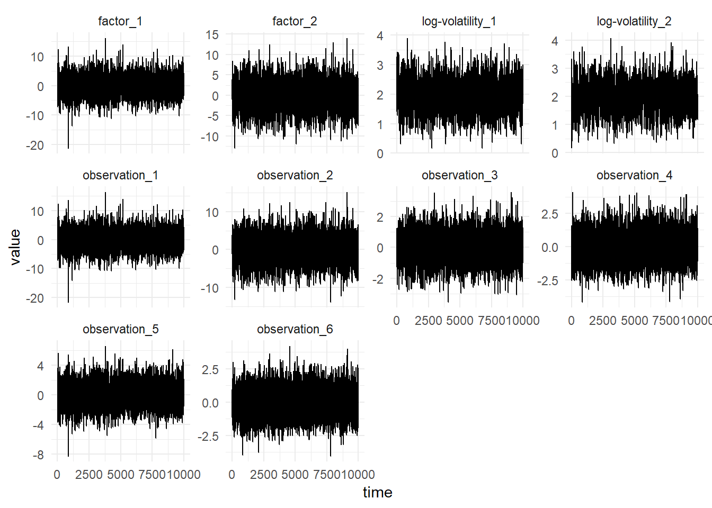

Factor Stochastic Volatility
Factor Stochastic Volatility Model
A factor structure can be used in order to model a full time varying covariance matrix. This reduces the amount of parameters to learn; if the covariance matrix is \(p \times p\) and the number of factors used \(k\), then the number of parameters to learn in a model with an AR(1) latent-state is \(p \times k - \frac{k}{2}(k + 1) + 3k\). If \(k << p\) then this results in a much lower dimensional parameter space.
The factor stochastic volatility (FSV) model is written as:
\[\begin{align} Y_t &= \beta^Tf_t + v_t, &v_t &\sim \mathcal{N}(0, V), \\ f_t &= \sigma_t\exp\left\{ \frac{\alpha_t}{2} \right\}, & \sigma_t &\sim \mathcal{N}(0, 1), \\ \alpha_t &= \mu + \phi (\alpha_{t-1} - \mu) + \eta_t, & \eta_t &\sim \mathcal{N}(0, \sigma_\eta), \\ \alpha_0 &\sim \mathcal{N}(0, \sigma^2/(1-\phi^2)). \end{align}\]
Where \(V\) is a diagonal \(p \times p\) matrix. Then the variance of the observations is:
\[\begin{align} \operatorname{Var}(Y_t) &= \operatorname{Var}(\beta^Tf_t + v_t) \\ &= \beta^T\operatorname{Var}(f_t)\beta + \operatorname{Var}(v_t) + 2\beta^T\operatorname{Cov}(f_t, v_t)\beta \\ &= \beta^T\exp\left\{\alpha_t\right\}\beta + V \end{align}\]
To define the factor stochastic volatility model, define the parmeters of the model and simulate using the parameters:
import dlm.core.model._
val beta = DenseMatrix((1.0, 0.0),
(0.3, 1.0),
(0.07, 0.25),
(0.23, 0.23),
(0.4, 0.25),
(0.2, 0.23))
val params = FsvParameters(
v = DenseMatrix.eye[Double](6) * 0.1,
beta,
Vector.fill(2)(SvParameters(0.8, 2.0, 0.3))
)
val sims = FactorSv.simulate(params).steps.take(1000)
Parameter Inference
Gibbs sampling is used to perform inference for the parameter posterior distribution. First the prior distributions of the parameters can be specified, they must be from the same family as the distributions below, since the posterior distributions in Gibbs sampling are conditionally conjugate:
import breeze.stats.distributions._
val priorBeta = Gaussian(0.0, 1.0)
val priorSigmaEta = InverseGamma(2, 2.0)
val priorPhi = Gaussian(0.8, 0.1)
val priorMu = Gaussian(2.0, 1.0)
val priorSigma = InverseGamma(10, 2.0)Then performing Gibbs sampling for the FSV model using the simulated data, sims:
val iters = FactorSv
.sampleAr(priorBeta,
priorSigmaEta,
priorMu,
priorPhi,
priorSigma,
sims,
params)The figure below shows the diagnostics from 100,000 iterations of the MCMC with the first 10,000 iterations dropped for burn-in and every 20th iteration selected.